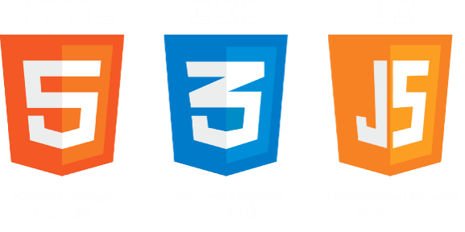

타란UX컨설팅
타란UX컨설팅

Web Publishing 의 기본요소
Anoju
타란UX컨설팅
a table of contents
타란UX컨설팅
타란UX컨설팅
출처: 위키백과
타란UX컨설팅
출처: 브런치
타란UX컨설팅
출처: 브런치
타란UX컨설팅
웹을 둘러볼 수 있게 하는 응용 프로그램을 말합니.
웹 브라우저(크롬, 사파리, 오페라, 인터넷 익스플로러, 파이어폭스 등) 이렇게 우리는 HTML의 마크업 언어를 통하여 웹 브라우저에게 '이렇게 표현해달라', '저렇게 표현해달라'라고 명령을 내리는 것입니다.
태그(Tag)는 영어사전에서는 어떤 표시를 하기 위해 붙인 꼬리표라고 명시되어 있습니다.
출처: 브런치
타란UX컨설팅
타란UX컨설팅
출처: 위키백과
타란UX컨설팅
태그에 직접 스타일(CSS)를 적용하는 방법이다
<p style="color:blue;">타란유엑스디는 좀 짱인듯?</p>
HTML 문서에 style태그를 사용하여 CSS 코드를 작성하는 방법이다.
<style type="text/css">
p {color:red;}
</style>
HTML 문서에 link 태그를 사용하여 CSS 확장명을 갖은 파일과 연결하고 그 CSS파일안에서 CSS 코드를 작성하는 방법이다.
<link rel="stylesheet" type="text/css" href="style.css">
p {color:yellow;}
타란UX컨설팅
기본작성법
선택자 { 속성:속성값; 속성:속성값;…. 속성:속성값; }
h2{display:inline-block;color:#fff;background:blue;}
선택자 작성에 대한 자세한 사용법은 해당링크 에서 확인
우선순위
h2{background:blue !important;}
!important : 점수 무한대, important가 겹칠때는 그들끼리 명시도 점수를 다시 따진다.
<h2 id="taran" class="title" style="background:yellow">타란유엑컨설팅</h2>
인라인 선언 : 점수 1000점
타란UX컨설팅
#taran{background:#000;}
id선택자: 점수 100점
.title{background:red;}
class 선택자: 점수 10점
h1 {color: green;}
Tag 선택자: 점수 1점
타란UX컨설팅
타란UX컨설팅
타란UX컨설팅
1. 다양한 용도
자바스크립트는 웹 프론트엔드 개발뿐만 아니라 서버 사이드 개발, 데스크탑 애플리케이션, 모바일 애플리케이션 등 다양한 분야에서 사용될 수 있습니다.
2. 높은 상호성
자바스크립트는 다양한 플랫폼에서 작동하며, 다른 언어로 작성된 코드와 상호작용할 수 있습니다.
3. 쉬운 학습 곡선
자바스크립트는 배우기 쉬우며, 대부분의 브라우저에서 즉시 실행됩니다. 이를 통해 빠른 프로토타이핑이 가능합니다.
4. 강력한 라이브러리와 프레임워크
자바스크립트는 jQuery, React, Vue.js, AngularJS 등 다양한 라이브러리와 프레임워크를 제공합니다.
출처: chatGPT
타란UX컨설팅
1. 브라우저 호환성
각 브라우저의 다른 자바스크립트 엔진으로 인해 브라우저 호환성 문제가 발생할 수 있습니다.
2. 보안 취약점
자바스크립트는 클라이언트 측에서 실행되므로, 보안 취약점이 존재할 수 있습니다.
3. 상대적으로 느린 실행 속도
자바스크립트는 인터프리터 언어이기 때문에, 컴파일 언어보다 상대적으로 느린 실행 속도를 보입니다.
이러한 문제를 극복하기 위해 JIT 컴파일러 등 다양한 방법이 사용되고 있습니다.
출처: chatGPT
타란UX컨설팅
하지만 일부 기능은 apple에서 지원하지 않고 있으니 그 점을 고려해야합니다.
출처: 유튜브
타란UX컨설팅
타란UX컨설팅
출처: samsung sds
타란UX컨설팅